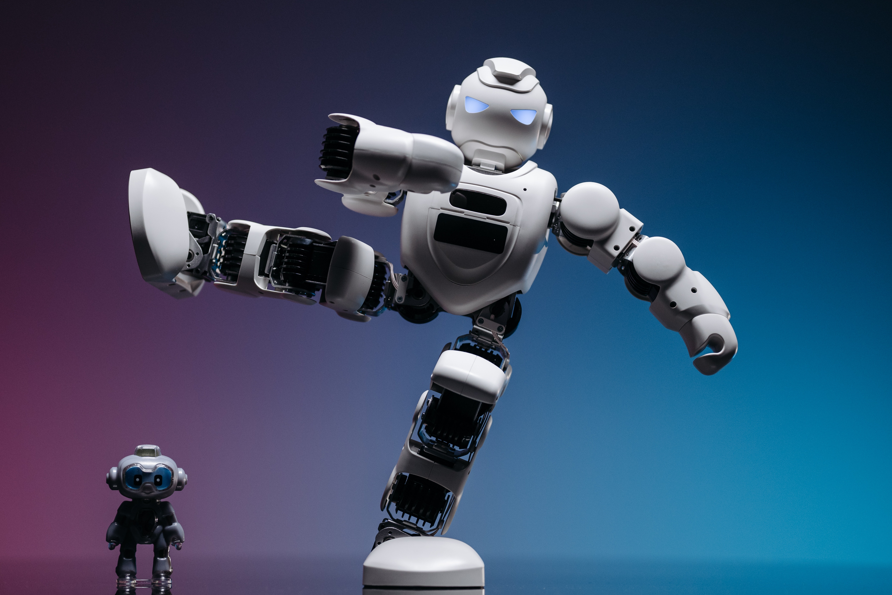

Pavel Danilyuk. (2021). A White Robot Toy with Knees Bent and Arms Raised on Sides. Pexels. https://www.pexels.com/photo/a-white-robot-toy-with-knees-bent-and-arms-raised-on-sides-8294653/
Introduction
robotics has changed many industries, but the most impactful areas is in medicine and healthcare.
The involvement of robotics in medicial practices has led massive advancements in patient care,
diagnosis, treatment, and treatment. Robots in Healthcare can offer alot of benefits, benefits
such as improved efficiently, enchanced precision, and reduction in human errors in complex
medical operations.

Pavel Danilyuk. (2021). A White Robot Toy with Arms and Leg Raised. Pexels. https://www.pexels.com/photo/a-white-robot-toy-with-arms-and-leg-raised-8294651/
With the increasing usage and new developments of robots in the medical field there will be
upincoming opportunities and problems related to this new tech in this industry. Opportunities
that may lead into improvements in operations that requirement precision like in bariatric surgery
and reduce human errors. Robots have risks like data leaks, and Robot-related errors, causing it
to become unreliable. And choices for a successful implenentation of this new technology in the
medical industry.